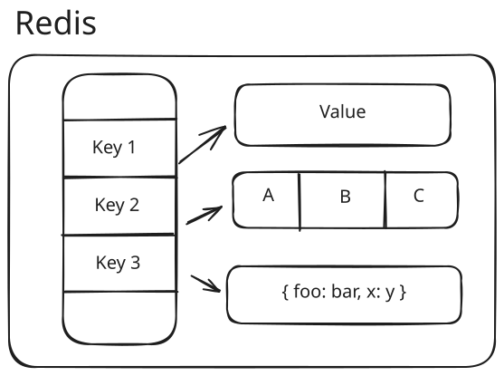
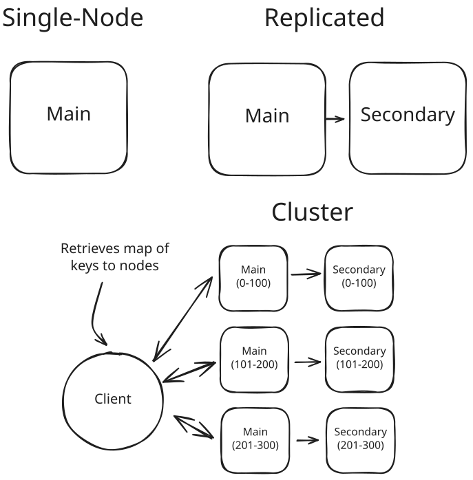
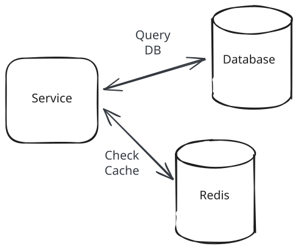
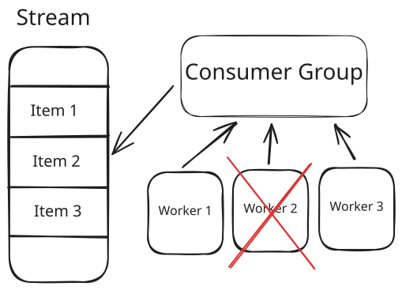
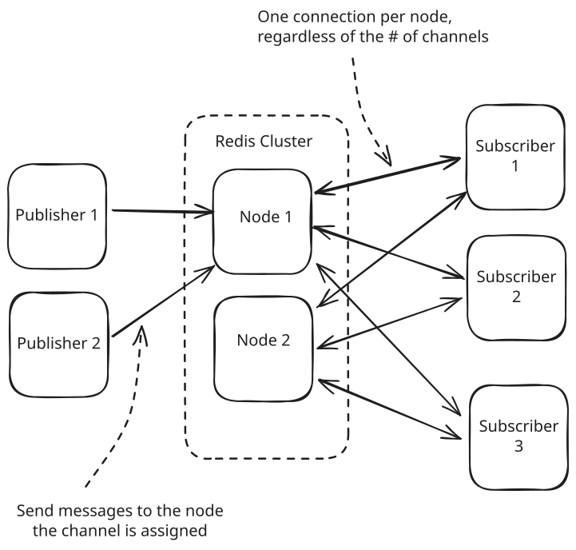
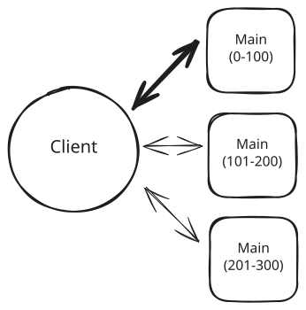

Key Technologies
Redis
Learn about how you can use Redis to solve a large number of problems in System Design.
Updated Jun 11, 2026
System designs can involve a dizzying array of different technologies, concepts and patterns, which is why Redis stands above the rest in terms of versatility. Instead of learning about dozens of different technologies, you can learn a few useful ones and learn them deeply, which magnifies the chances that you're able to get to the level your interviewer is expecting.
Beyond versatility, Redis is great for its simplicity. Redis has a ton of features which resemble data structures you're probably used to from coding (hashes, sets, sorted sets, streams, etc) and which are easy to reason about in a distributed system once you know a few basics. While many databases involve a lot of magic (optimizers, query planners, etc), Redis has remained deliberately simple and good at what it does best: executing simple operations fast.
Redis Basics
Redis is a self-described "data structure store" written in C. It keeps everything in memory and executes your commands one at a time on a single thread, which makes it both very fast and easy to reason about. The single-threaded design is deliberate: command execution never needs locks, and for operations this simple a single core is rarely the bottleneck. Newer versions offload I/O and background work to other threads, but the mental model to keep is one command at a time, in order.
One important reason you might not want to use Redis is because you need durability. Redis has two persistence modes: RDB takes periodic snapshots (a crash loses everything since the last one), and AOF logs every write but only fsyncs once per second by default (a crash loses up to a second of acknowledged writes). You can configure AOF to fsync on every write, but few deployments do because it costs the speed they came for. This is an intentional tradeoff made by the Redis team: you don't get the commit-is-on-disk guarantee a relational database gives you with its defaults. Alternative implementations like AWS' MemoryDB compromise a bit on speed to give you real disk-based durability. If you need it, it's there!
The core structure underneath Redis is a key-value store: every object in Redis is a value stored at a string key, and the value is where the data structure lives. When you create a sorted set, you're storing it as the value at whatever key you chose for it.

Redis logical model
Some of the most fundamental data structures supported by Redis:
- Strings
- Hashes (objects/dictionaries)
- Lists
- Sets
- Sorted Sets (Priority Queues)
- Streams (append-only logs)
- Geospatial Indexes
Redis 8 also ships probabilistic structures like Bloom filters, JSON, and time series support in core. On older versions, these came from Redis Stack modules.
In addition to simple data structures, Redis also supports different communication patterns like Pub/Sub and Streams, partially standing in for more complex setups like Apache Kafka or AWS SNS/SQS.
The choice of keys is important as these keys might be stored in separate nodes based on your infrastructure configuration. Effectively, the way you organize the keys will be the way you organize your data and scale your Redis cluster.
Commands
Redis speaks a simple wire protocol called RESP: commands and their arguments travel over the wire close to how you'd type them. That's why the CLI feels so direct. You can literally connect to a Redis instance and run these commands as-is.
SET foo 1
GET foo # Returns 1
INCR foo # Returns 2
XADD mystream * name Sara surname OConnor # Adds an item to a streamThe full set of commands is surprisingly readable, when grouped by data structure. As an example, Redis' Sets support simple operations like adding an element to the set (SADD), getting the number of elements or cardinality (SCARD), listing those elements (SMEMBERS) and checking existence (SISMEMBER), close analogs to what you would have with a Set in any general purpose programming language.
Infrastructure Configurations
Redis can run as a single node, with a high availability (HA) replica, or as a cluster. When operating as a cluster, every key hashes to one of 16,384 "hash slots", and each slot is assigned to a node. This is sharding: each node owns a share of the slots, and therefore a share of your keys. Redis clients cache the slot-to-node mapping, so they can compute the slot from the key and connect directly to the node which contains the data they are requesting. When you add a node, slots (and the keys in them) migrate to it.

Redis infrastructure configurations
Think of hash slots like a phone book: the client keeps a local map from slots to nodes. If a slot moves during rebalancing or failover, the server replies with MOVED and the client refreshes its map (e.g. via CLUSTER SHARDS).
Nodes share cluster state with each other (via a gossip protocol), so every node knows the full slot map. If you ask the wrong node for a key, you get a MOVED reply pointing at the right one. The node won't forward the request for you, so clients cache the map and aim for the correct node on the first try.
A word on replicas, since most production deployments run them: Redis replication is asynchronous. The primary acknowledges your write before the replica has seen it, so when a primary dies and a replica is promoted, the last moments of acknowledged writes can simply vanish. This is the deepest reason Redis isn't a system of record, and it matters again when we talk about locks below.
The same speed-first philosophy shapes the cluster layer. Compared to most databases, Redis clusters are surprisingly basic: rather than solving scalability problems for you, they hand you primitives to solve them yourself. As an example, with few exceptions, Redis expects all the data for a given request to be on a single node! Choosing how to structure your keys is how you scale Redis. When two keys genuinely need to live together, hash tags arrange it: only the part of the key inside {braces} gets hashed, so {user:123}:posts and {user:123}:likes always land in the same slot, ready for a MULTI transaction across both.
Performance
Redis is really, really fast. A single Redis node can handle something like 100k writes per second. The command itself executes in microseconds; over the network you'll see sub-millisecond reads. This scale makes some anti-patterns for other database systems actually feasible with Redis. Firing off one query per item in a list (the N+1 pattern) is ruinous against a SQL database, but with Redis each command costs the server microseconds and you can pipeline them (or use MGET) to pay one round trip instead of a hundred. It'd still be better to avoid it, but it won't sink your design.
This speed is entirely a function of the in-memory nature of Redis. It's not a good fit for every use case, but it's a great fit for many.
Capabilities
Redis as a Cache
The most common deployment scenario of Redis is as a cache. The mapping is direct: your cache keys are Redis keys, your cached values are Redis values. Redis can distribute this hash map trivially across all the nodes of our cluster, enabling us to scale without much fuss. If we need more capacity, we simply add nodes to the cluster.
For example, you might cache a product under key product:123 with the value stored as a JSON blob or a Redis Hash containing fields like name, price, and inventoryCount.
When using Redis as a cache, you'll often employ a time to live (TTL) on each key. Redis guarantees you'll never read the value of a key after the TTL has expired. Expiration handles staleness, not memory pressure: out of the box, Redis actually rejects writes once memory is full. For a cache you'll configure an eviction policy like allkeys-lru so Redis discards the least-recently-used keys to make room. Redis approximates LRU by sampling keys rather than tracking exact order, which is plenty for a cache.
Using Redis in this fashion doesn't solve one of the more important problems caches face: the "hot key" problem, where a single key absorbs a disproportionate share of traffic. This isn't unique to Redis. Memcached and even highly scaled databases like DynamoDB face the same issue. We'll dig into remediations below.

Redis as a cache
Redis as a Distributed Lock
Another common use of Redis in system design settings is as a distributed lock. Occasionally we have data in our system and we need to maintain consistency during updates (e.g. the very common Design Ticketmaster system design question), or we need to make sure multiple people aren't performing an action at the same time (e.g. Design Uber).
Redis works here because it's one shared server all your app servers can reach, and every command executes atomically. The lock itself is just a key that everyone agrees on, like lock:concert:343. To acquire it, try to create that key:
SET lock:concert:343 my-token NX EX 30The NX flag makes the SET succeed only if the key doesn't already exist. If it succeeded, you own the lock. If not, someone else does. Wait and retry. The EX 30 puts a 30 second expiry on the key so a crashed process can't hold the lock forever, and my-token is a random value unique to you, which matters in a second.
Releasing the lock means deleting the key, but don't just DEL it. Your lock may have expired and been acquired by someone else, and a blind delete would remove their lock. Instead, check that the key still holds your token and delete only then. The check and delete run as a tiny Lua script. Redis executes the whole script as one command on its single thread, which is what makes it atomic:
if redis.call("GET", KEYS[1]) == ARGV[1] then return redis.call("DEL", KEYS[1]) endCandidates sometimes ask whether this is "optimistic locking." It's the opposite: grabbing a lock before doing the work is pessimistic. Redis also supports optimistic concurrency control: WATCH a key, run your transaction with MULTI/EXEC, and the transaction aborts if the watched key changed in the meantime.
This single-node lock has a failure mode we saw in the cluster section: replication is asynchronous, so if the primary dies right after granting your lock, the promoted replica may never have heard of it and will happily grant the same lock to someone else. The Redlock algorithm exists to survive exactly this: it acquires the lock on a majority of independent Redis nodes. Know that it's controversial. A paused or slow client can still act after its lock has expired, and Martin Kleppmann's critique walks through exactly how this fails. The standard defense is a fencing token: every lock grant comes with an increasing number, and the storage layer rejects writes stamped with an old one. Redis has nothing built in to provide that.
Treat a Redis lock as an efficiency tool that occasionally fails, not a correctness guarantee. If a stale lock holder would corrupt data in your design, enforce the invariant where the data lives or use a consensus system like ZooKeeper or etcd. In practice, a SELECT ... FOR UPDATE row lock or a conditional UPDATE ... WHERE version = X in your database often replaces the distributed lock entirely.
Redis for Leaderboards
Redis' sorted sets maintain ordered data that can be queried in log time, making them a natural fit for leaderboard applications. The high write throughput and low read latency make this especially useful for scaled applications where something like a SQL DB will start to struggle.
Take our Post Search breakdown as an example of sorted sets at work: we need to find the posts containing a given keyword (e.g. "tiger") which have the most likes (e.g. "Tiger Woods made an appearance..." @ 500 likes).
We can use Redis' sorted sets to maintain a list of the top liked posts for a given keyword. Periodically, we can remove low-ranked posts to save space.
ZADD tiger_posts 500 "SomeId1" # Add the Tiger woods post
ZADD tiger_posts 1 "SomeId2" # Add some tweet about zoo tigers
ZREMRANGEBYRANK tiger_posts 0 -6 # Remove all but the top 5 postsZADD sets the member's score, replacing it if the member already exists, so re-adding a post with its new like count just moves its rank. And ZREMRANGEBYRANK's negative indexes count from the highest rank: removing ranks 0 through -6 clears everything from the lowest score up to the sixth-from-top, leaving exactly the top 5.
Redis for Rate Limiting
Redis' data structures also make rate limiting straightforward. A common algorithm is a fixed-window rate limiter where we guarantee that the number of requests does not exceed N over some fixed window of time W.
Implementation of this in Redis is simple. When a request comes in, we increment (INCR) the counter key for the current window and check the response. If the count exceeds N, we reject the request (a 429 with a Retry-After header is the usual move). Otherwise we proceed. One subtlety: set the expiry only when INCR returns 1, i.e. on the first request of the window. Calling EXPIRE on every request keeps pushing the reset forward, and a steady stream of traffic would never get a fresh window. Run the INCR and EXPIRE as one Lua script, the same trick the lock release used. A crash between the two commands would leave a counter that never resets.
If you need a sliding window, sorted sets handle it. Keep one sorted set per user with the request timestamp as the score. On each request: ZREMRANGEBYSCORE to drop entries older than the window, ZCARD to count what's left, and if the count is under N, ZADD the new request. Run the sequence as a Lua script so it executes atomically.
Redis for Proximity Search
Redis natively supports geospatial indexes with commands like GEOADD and GEOSEARCH. The basic commands are simple:
GEOADD key longitude latitude member # Adds "member" to the index at key "key"
GEOSEARCH key FROMLONLAT longitude latitude BYRADIUS radius unit # Searches the index at key "key" at specified position and radiusThe search command, in this instance, runs in O(N+log(M)) time where N is the number of elements inside the grid-aligned bounding box around your search area and M is the number of items that actually fall within your radius.
Why do we have both N and M? Redis' geospatial commands use geohashes under the hood (latitude and longitude encoded into a single sortable value, stored in a sorted set). Seeking into that sorted set is where the log term comes from. The geohash boxes are grid-aligned and square, so they're imprecise: the first pass grabs the N candidates inside the boxes, and a second pass filters them down to the M items within the exact radius.
Redis for Event Sourcing
Redis' streams are append-only logs similar to Kafka's topics, and they're the building block for event-sourced designs, where you store an ordered log of events and derive state from it. Producers append items with commands like XADD, and consumer groups (XREADGROUP, XCLAIM) coordinate which consumer processes which item. One caution before you lean on the word "log": stream entries are only as durable as your persistence settings, so with the defaults a crash can lose recent entries, the same tradeoff from the durability callout at the top of the page.

Redis streams and consumer groups
A work queue shows how the pieces fit together. We add items onto the queue with XADD and attach a single consumer group to the stream for our workers. On the happy path, a worker reads an item via XREADGROUP, processes it, and acknowledges it. The consumer group tracks which items are pending with which worker, and each pending entry carries an idle time. When a worker dies mid-task, its entry's idle time keeps climbing until another worker claims it with XCLAIM (or XAUTOCLAIM) and restarts the job. That same mechanism means an item can occasionally be processed twice, because Redis can't tell a slow worker from a dead one. Make your processing idempotent.
So when is this Kafka's job instead? Redis streams are a great fit when you already have Redis in your design and the queue is modest: background jobs, notification fan-out, work distribution. Kafka earns its operational complexity when you need long retention, replay for many independent consumers, or durable ordered throughput at a scale where losing a message is unacceptable.
Redis for Pub/Sub
Streams are for consumers that need to catch up on what they missed. When you only care about delivering to whoever's listening right now, Redis natively supports a publish/subscribe (Pub/Sub) messaging pattern: messages broadcast to multiple subscribers in real time. This is useful for building chat systems, real-time notifications, or any scenario where you want to decouple message producers from consumers (more discussion on this in our Realtime Updates pattern).
People frequently call out limitations of Redis Pub/Sub that are no longer true. The big one: classic cluster Pub/Sub broadcast every message to every node, so adding nodes didn't add capacity. Since Redis 7, sharded Pub/Sub (SPUBLISH/SSUBSCRIBE) routes each channel to the shard that owns its slot, and capacity scales with the cluster.
The basic commands are straightforward:
PUBLISH channel message # Sends a message to all subscribers of 'channel'
SUBSCRIBE channel # Listens for messages on 'channel'In cluster mode you'll reach for the sharded variants (SPUBLISH/SSUBSCRIBE), which hash the channel to a slot like any key.
A channel is just a name. There's nothing to create or configure: publishers send to a channel name, subscribers listen on it, and that's what brings it into existence. When a client subscribes to a channel, it will receive any messages published to that channel as long as the connection remains open. This makes Pub/Sub great for ephemeral, real-time communication, but messages are not persisted: if a subscriber is offline when a message is published, it will miss that message entirely.
Connection overhead is per node, not per channel. A subscriber holds one connection to a node and receives all of its subscribed channels over that single connection, so millions of channels don't mean millions of connections. With sharded Pub/Sub, each channel hashes to a slot just like a key does, which means a subscriber only needs connections to the nodes that own the channels it cares about.

Redis Pub/Sub
Redis Pub/Sub is simple and fast, but not durable. The delivery of messages is "at most once" which means that if a subscriber is offline when a message is published, it will miss that message entirely. If you need message persistence, delivery guarantees, or the ability to replay missed messages, consider using Redis Streams or a dedicated message broker like Kafka or RabbitMQ.
Pub/Sub is a great fit for interview scenarios where you need to demonstrate real-time communication patterns, but be ready to discuss its limitations and when you might need stronger delivery guarantees.
Need offline delivery or durable fan-out? Redis Streams are a good option or you can pair Pub/Sub with a queue (e.g., SNS→SQS, Kafka) or outbox pattern (i.e. write the messages to a database) so consumers can catch up later.
Can I roll my own Pub/Sub?
Some candidates recoil at the idea of using Redis' native Pub/Sub because they're concerned about scalability. The concern usually stems from a misunderstanding: they assume Pub/Sub uses a connection per channel, which it doesn't. The typical proposal looks like this:
Instead of using Redis Pub/Sub, we'll create a key for each topic whose value is the set of subscriber server addresses. Then, when a user wants to publish a message to that topic, they can look up the key and send the message directly to those servers.
While there may be some applications of this, it has some acute downsides.
First, the number of network hops is increased. With Pub/Sub, when we want to send a message, the pathway looks like this:
1. Client sends message to Pub/Sub node
2. Pub/Sub node dispatches message to all subscribersTwo network hops. With the homegrown Pub/Sub, the pathway looks like this:
1. Client requests subscribers for topic key from Redis
2. Redis responds with servers to contact
3. Client sends message to each serverThree network hops. The last hop is the most expensive because it's likely that we don't already have a TCP connection established to each subscriber. When we set up a Pub/Sub connection, we're establishing (and holding open) a TCP connection to each node. This makes the message quick to send. With our homegrown approach, we need to establish these new connections for each server before we send.
And next, we need to consider the resident memory cost. With Pub/Sub, we're only keeping track of channels that have active subscribers. When the last subscriber for a channel disconnects, the channel is removed from memory, and subsequent publishes to it are simply dropped. With our homegrown approach, when a server goes down we need to somehow learn about it to remove the entry from our map. This may require some sort of heartbeat mechanism where each server reports "hey, I'm still alive listening to this topic", either explicitly or using a TTL. This adds a lot of complexity and chatter to the system, especially if the number of topics is high.
All said, if you have a use-case that seems like Pub/Sub, use Pub/Sub!
Shortcomings and Remediations
Hot Key Issues
If our load is not evenly distributed across the keys in our Redis cluster, we can run into a problem known as the "hot key" issue. To illustrate it, let's pretend we're using Redis to cache the details of items in our ecommerce store. We have lots of items so we scale our cluster to 100 nodes and our items are evenly spread across them. So far, so good. Now imagine one day we have a surge of interest for one particular item, so much that the volume for this item matches the volume for the rest of the items.

Hot key issue
Now the load on one server is dramatically higher than the rest of the servers. Unless we were severely overprovisioned, this server is now going to start failing.
There are lots of potential solutions for this, all with tradeoffs.
Client-side caching. Each app server keeps a small in-memory cache of the hottest items, so most reads for the hot item never reach Redis at all. The cost is a second cache to keep coherent: you'll serve data that's stale by up to that cache's TTL, which is why this works best with short TTLs on a small set of keys.
Key copies. Store the same data under several keys (product:123:1 through product:123:10) so the copies hash to different slots and land on different nodes, then have readers pick a suffix at random. Readers have to know which keys are duplicated, though. In practice you decide up front (or detect at runtime) which keys are hot and keep that list where clients can see it, and every write to a hot item now fans out to all of its copies.
Read replicas. Adding replicas multiplies read capacity, with two caveats that interviewers love to probe. Cluster clients read from the primary by default, so replicas only absorb load if your clients are configured for replica reads. And replicas do nothing for a write-hot key, since every write still lands on the one primary that owns the slot.
In an interview, recognize potential hot key issues (+) and proactively design remediations (++).
We cover all of these techniques (and more) as part of our Scaling Reads and Scaling Writes patterns.
When Not to Use Redis
Let's state the boundary plainly. Don't make Redis your system of record: between async replication and the persistence loss windows, acknowledged writes can vanish. Don't reach for it when your working set can't economically fit in RAM: memory is the most expensive place to keep data. Don't expect query flexibility: there are no joins, no cross-key queries, and in a cluster, multi-key operations only work within a single slot (hash tags notwithstanding). And when you need durable, replayable streams with long retention for many independent consumers, that's Kafka's job.
Summary
Redis is a powerful, versatile, and simple tool you can use in system design interviews. Because Redis' capabilities are based on simple data structures, reasoning through the scaling implications of your decisions is straightforward: allowing you to go deep with your interviewer without needing to know a lot of details about Redis internals.
Test Your Knowledge
Answer the question below to find your gaps.
Question 1 of 15
What are the key architectural characteristics that make Redis particularly fast?
1
Multi-threaded processing and disk-based storage
2
Sharded databases and connection pooling
3
In-memory storage and single-threaded execution
4
Distributed architecture and query optimization